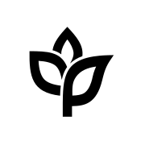
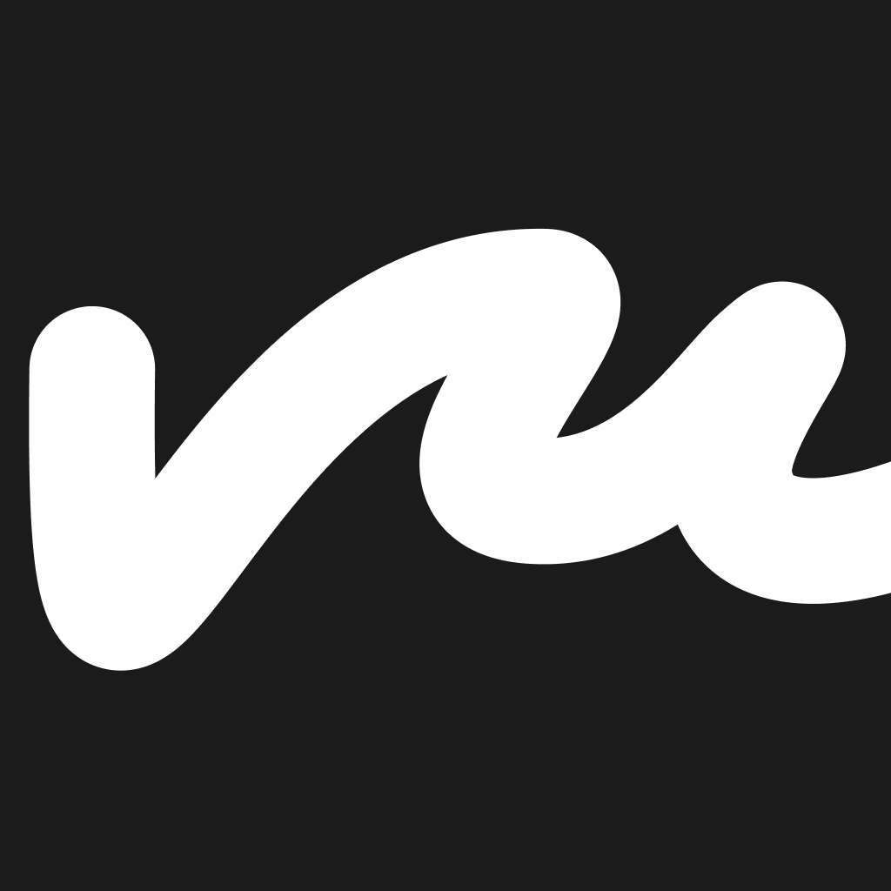
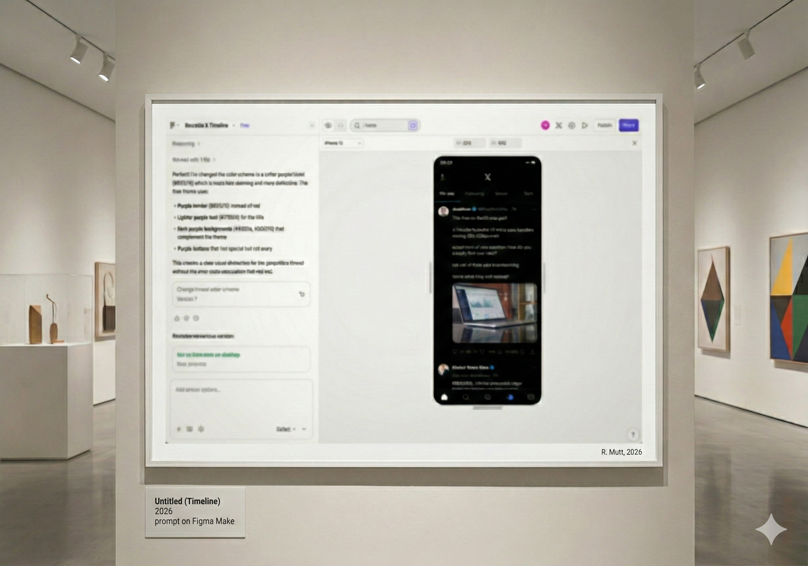

Experience
Building products and teams.
I work as a player-coach: close enough to the craft to understand design work in detail, while shaping the right organization, setting clear direction and focus, and raising the bar for design.
-
2025 — Present01
Wecasa
Design Lead
-
2022 — 2025

02Ankorstore
Design Lead
-
2017 — 201903
Orange Business Services
Product Designer
-
2016 — 201704
Etsy
Product Designer · a Little Market
-
2012 — 201605
Shopmium
Startup Designer
Just because 🧲 you can’t solve a problem completely ⛰️ doesn’t mean 🚫 you shouldn’t try 🛠️ to reduce its impact. 🌊
Selected projects
Keeping a point of view.
Independent products and visual experiments where product thinking, technology and culture meet.
01 · AI product
Prevue
Preview your future self with AI portraits.

02 · Visual research
Calembours Visuels
Art, technology and what designers know.
